- 00 开篇词 想成为技术牛人？先搞定网络协议！.md.html
- 01 为什么要学习网络协议？.md.html
- 02 网络分层的真实含义是什么？.md.html
- 03 ifconfig：最熟悉又陌生的命令行.md.html
- 04 DHCP与PXE：IP是怎么来的，又是怎么没的？.md.html
- 05 从物理层到MAC层：如何在宿舍里自己组网玩联机游戏？.md.html
- 06 交换机与VLAN：办公室太复杂，我要回学校.md.html
- 07 ICMP与ping：投石问路的侦察兵.md.html
- 08 世界这么大，我想出网关：欧洲十国游与玄奘西行.md.html
- 09 路由协议：西出网关无故人，敢问路在何方.md.html
- 10 UDP协议：因性善而简单，难免碰到“城会玩”.md.html
- 11 TCP协议（上）：因性恶而复杂，先恶后善反轻松.md.html
- 12 TCP协议（下）：西行必定多妖孽，恒心智慧消磨难.md.html
- 13 套接字Socket：Talk is cheap, show me the code.md.html
- 14 HTTP协议：看个新闻原来这么麻烦.md.html
- 15 HTTPS协议：点外卖的过程原来这么复杂.md.html
- 16 流媒体协议：如何在直播里看到美女帅哥？.md.html
- 17 P2P协议：我下小电影，99%急死你.md.html
- 18 DNS协议：网络世界的地址簿.md.html
- 19 HttpDNS：网络世界的地址簿也会指错路.md.html
- 20 CDN：你去小卖部取过快递么？.md.html
- 21 数据中心：我是开发商，自己拿地盖别墅.md.html
- 22 VPN：朝中有人好做官.md.html
- 23 移动网络：去巴塞罗那，手机也上不了脸书.md.html
- 24 云中网络：自己拿地成本高，购买公寓更灵活.md.html
- 25 软件定义网络：共享基础设施的小区物业管理办法.md.html
- 26 云中的网络安全：虽然不是土豪，也需要基本安全和保障.md.html
- 27 云中的网络QoS：邻居疯狂下电影，我该怎么办？.md.html
- 28 云中网络的隔离GRE、VXLAN：虽然住一个小区，也要保护隐私.md.html
- 29 容器网络：来去自由的日子，不买公寓去合租.md.html
- 30 容器网络之Flannel：每人一亩三分地.md.html
- 31 容器网络之Calico：为高效说出善意的谎言.md.html
- 32 RPC协议综述：远在天边，近在眼前.md.html
- 33 基于XML的SOAP协议：不要说NBA，请说美国职业篮球联赛.md.html
- 34 基于JSON的RESTful接口协议：我不关心过程，请给我结果.md.html
- 35 二进制类RPC协议：还是叫NBA吧，总说全称多费劲.md.html
- 36 跨语言类RPC协议：交流之前，双方先来个专业术语表.md.html
- 37 知识串：用双十一的故事串起碎片的网络协议（上）.md.html
- 38 知识串：用双十一的故事串起碎片的网络协议（中）.md.html
- 39 知识串：用双十一的故事串起碎片的网络协议（下）.md.html
- 40 搭建一个网络实验环境：授人以鱼不如授人以渔.md.html
- 加餐1 创作故事：我是如何创作“趣谈网络协议”专栏的？.md.html
- 协议专栏特别福利 答疑解惑1期.md.html
- 协议专栏特别福利 答疑解惑2期.md.html
- 协议专栏特别福利 答疑解惑3期.md.html
- 协议专栏特别福利 答疑解惑4期.md.html
- 协议专栏特别福利 答疑解惑5期.md.html
- 结束语 放弃完美主义，执行力就是限时限量认真完成.md.html
- 捐赠
协议专栏特别福利 答疑解惑2期
你好，我是刘超。
第二期答疑涵盖第3讲至第6讲的内容。我依旧对课后思考题和留言中比较有代表性的问题作出回答。你可以点击文章名，回到对应的章节复习，也可以继续在留言区写下你的疑问，我会持续不断地解答。希望对你有帮助。
《第3讲 | ifconfig：最熟悉又陌生的命令行》
课后思考题
你知道 net-tools 和 iproute2 的“历史”故事吗？
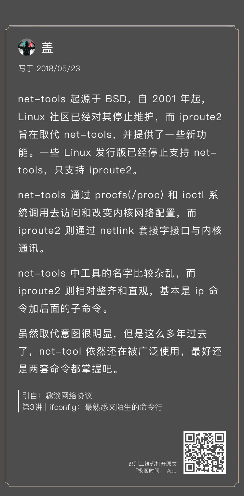
这个问题的答案，盖同学已经写的比较全面了。具体的对比，我这里推荐一篇文章https://linoxide.com/linux-command/use-ip-command-linux/，感兴趣的话可以看看。
留言问题
1.A、B、C类地址的有效地址范围是多少？
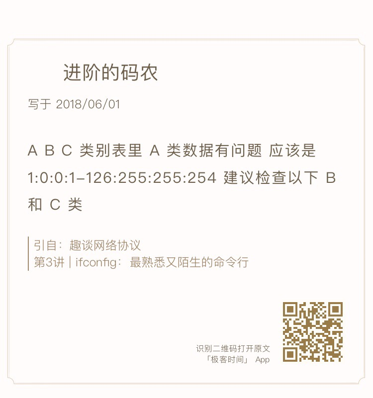
我在写的时候，没有考虑这么严谨，平时使用地址的时候，也是看个大概的范围。所以这里再回答一下。
A类IP的地址第一个字段范围是0～127，但是由于全0和全1的地址用作特殊用途，实际可指派的范围是1～126。所以我仔细查了一下，如果较真的话，你在答考试题的时候可以说，A类地址范围和A类有效地址范围。
2.网络号、IP地址、子网掩码和广播地址的先后关系是什么？
当在一个数据中心或者一个办公室规划一个网络的时候，首先是网络管理员规划网段，一般是根据将来要容纳的机器数量来规划，一旦定了，以后就不好变了。
假如你在一个小公司里，总共就没几台机器，对于私有地址，一般选择192.168.0.0/24就可以了。
这个时候先有的是网络号。192.168.0就是网络号。有了网络号，子网掩码同时也就有了，就是前面都是网络号的是1，其他的是0，广播地址也有了，除了网络号之外都是1。
当规划完网络的时候，一般这个网络里面的第一个、第二个地址被默认网关DHCP服务器占用，你自己创建的机器，只要和其他的不冲突就可以了，当然你也可以让DHCP服务自动配置。
规划网络原来都是网络管理员的事情。有了公有云之后，一般有个概念虚拟网络（VPC），鼠标一点就能创建一个网络，网络完全软件化了，任何人都可以做网络规划。
3.组播和广播的意义和原理是什么？
C类地址的主机号8位，去掉0和255，就只有254个了。
在《TCP/IP详解》这本书里面，有两章讲了广播、多播以及IGMP。广播和组播分为两个层面，其中MAC层有广播和组播对应的地址，IP层也有自己的广播地址和组播地址。
广播相对比较简单，MAC层的广播为ff:ff:ff:ff:ff:ff，IP层指向子网的广播地址为主机号为全1且有特定子网号的地址。
组播复杂一些，MAC层中，当地址中最高字节的最低位设置为1时，表示该地址是一个组播地址，用十六进制可表示为01:00:00:00:00:00。IP层中，组播地址为D类IP地址，当IP地址为组播地址的时候，有一个算法可以计算出对应的MAC层地址。
多播进程将目的IP地址指明为多播地址，设备驱动程序将它转换为相应的以太网地址，然后把数据发送出去。这些接收进程必须通知它们的IP层，它们想接收的发给定多播地址的数据报，并且设备驱动程序必须能够接收这些多播帧。这个过程就是“加入一个多播组”。
当多播跨越路由器的时候，需要通过IGMP协议告诉多播路由器，多播数据包应该如何转发。
4.MTU 1500的具体含义是什么？
MTU（Maximum Transmission Unit，最大传输单元）是二层的一个定义。以以太网为例，MTU为1500个Byte，前面有6个Byte的目标MAC地址，6个Byte的源MAC地址，2个Byte的类型，后面有4个Byte的CRC校验，共1518个Byte。
在IP层，一个IP数据报在以太网中传输，如果它的长度大于该MTU值，就要进行分片传输。如果不允许分片DF，就会发送ICMP包，这个在[ICMP]那一节讲过。
在TCP层有个MSS（Maximum Segment Size，最大分段大小），它等于MTU减去IP头，再减去TCP头。即在不分片的情况下，TCP里面放的最大内容。
在HTTP层看来，它的body没有限制，而且在应用层看来，下层的TCP是一个流，可以一直发送，但其实是会被分成一个个段的。
《第4讲 | DHCP与PXE：IP是怎么来的，又是怎么没的》
课后思考题
PXE 协议可以用来安装操作系统，但是如果每次重启都安装操作系统，就会很麻烦。你知道如何使得第一次安装操作系统，后面就正常启动吗？
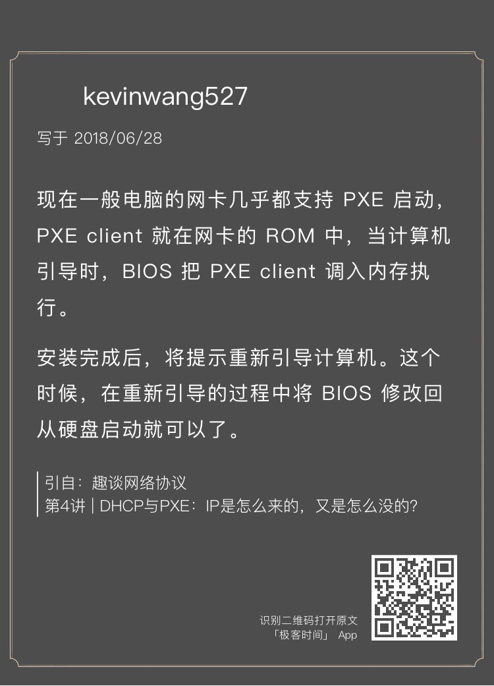
一般如果咱们手动安装一台电脑的时候，都是有启动顺序的，如果改为硬盘启动，就没有问题了。

好在服务器一般都提供IPMI接口，可以通过这个接口启动、重启、设置启动模式等等远程访问，这样就可以批量管理一大批机器。
这里提到Cobbler，这是一个批量安装操作系统的工具。在OpenStack里面，还有一个Ironic，也是用来管理裸机的。有兴趣的话可以研究一下。
留言问题
1.在DHCP网络里面，手动配置IP地址会冲突吗?
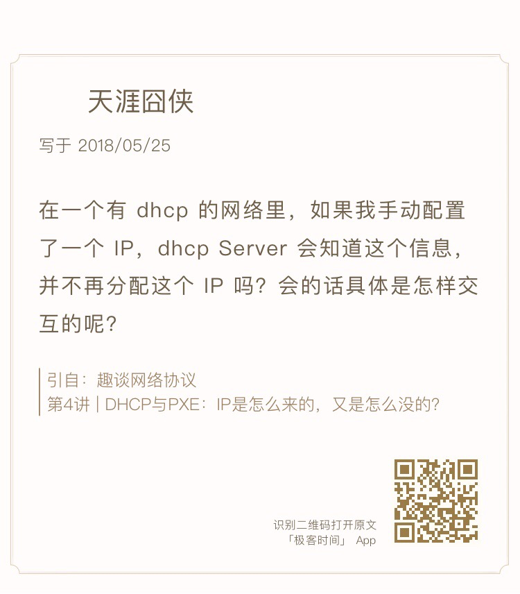
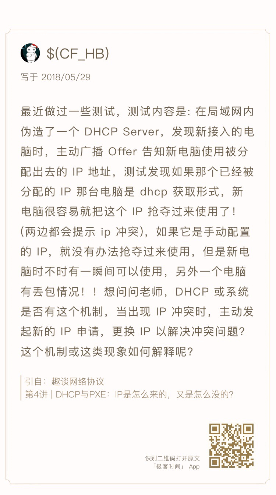
在一个DHCP网络里面，如果某一台机器手动配置了一个IP地址，并且在DHCP管理的网段里的话，DHCP服务器是会将这个地址分配给其他机器的。一旦分配了，ARP的时候，就会收到两个应答，IP地址就冲突了。
当发生这种情况的时候，应该怎么办呢？DHCP的过程虽然没有明确如何处理，但是DHCP的客户端和服务器都可以添加相应的机制来检测冲突。
如果由客户端来检测冲突，一般情况是，客户端在接受分配的IP之前，先发送一个ARP，看是否有应答，有就说明冲突了，于是发送一个DHCPDECLINE，放弃这个IP地址。
如果由服务器来检测冲突，DHCP服务器会发送ping，来看某个IP是否已经被使用。如果被使用了，它就不再将这个IP分配给其他的客户端了。
2.DHCP的Offer和ACK应该是单播还是广播呢？
没心没肺 回答得很正确。
这个我们来看DHCP的RFC，我截了个图放在这儿：
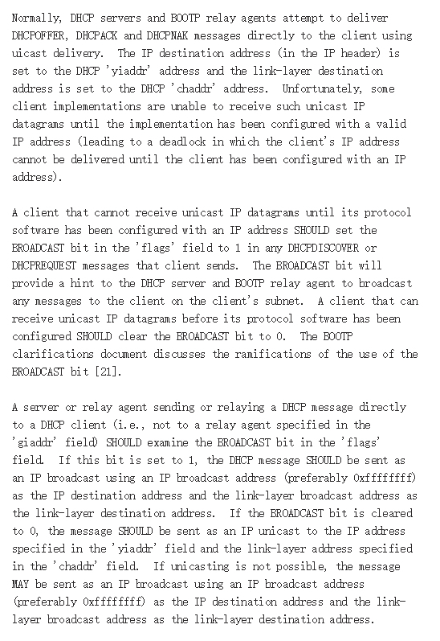
这里面说了几个问题。
正常情况下，一旦有了IP地址，DHCP Server还是希望通过单播的方式发送OFFER和ACK。但是不幸的是，有的客户端协议栈的实现，如果还没有配置IP地址，就使用单播。协议栈是不接收这个包的，因为OFFER和ACK的时候，IP地址还没有配置到网卡上。
所以，一切取决于客户端的协议栈的能力，如果没配置好IP，就不能接收单播的包，那就将BROADCAST设为1，以广播的形式进行交互。
如果客户端的协议栈实现很厉害，即便是没有配置好IP，仍然能够接受单播的包，那就将BROADCAST位设置为0，就以单播的形式交互。
3.DHCP如何解决内网安全问题?
其实DHCP协议的设计是基于内网互信的基础来设计的，而且是基于UDP协议。但是这里面的确是有风险的。例如一个普通用户无意地或者恶意地安装一台DHCP服务器，发放一些错误或者冲突的配置；再如，有恶意的用户发出很多的DHCP请求，让DHCP服务器给他分配大量的IP。
对于第一种情况，DHCP服务器和二层网络都是由网管管理的，可以在交换机配置只有来自某个DHCP服务器的包才是可信的，其他全部丢弃。如果有SDN，或者在云中，非法的DHCP包根本就拦截到虚拟机或者物理机的出口。
对于第二种情况，一方面进行监控，对DHCP报文进行限速，并且异常的端口可以关闭，一方面还是SDN或者在云中，除了被SDN管控端登记过的IP和MAC地址，其他的地址是不允许出现在虚拟机和物理机出口的，也就无法模拟大量的客户端。
《第5讲 | 从物理层到MAC层：如何在宿舍里自己组网玩联机游戏？》
课后思考题
1.在二层中我们讲了 ARP 协议，即已知 IP 地址求 MAC；还有一种 RARP 协议，即已知 MAC 求 IP 的，你知道它可以用来干什么吗？
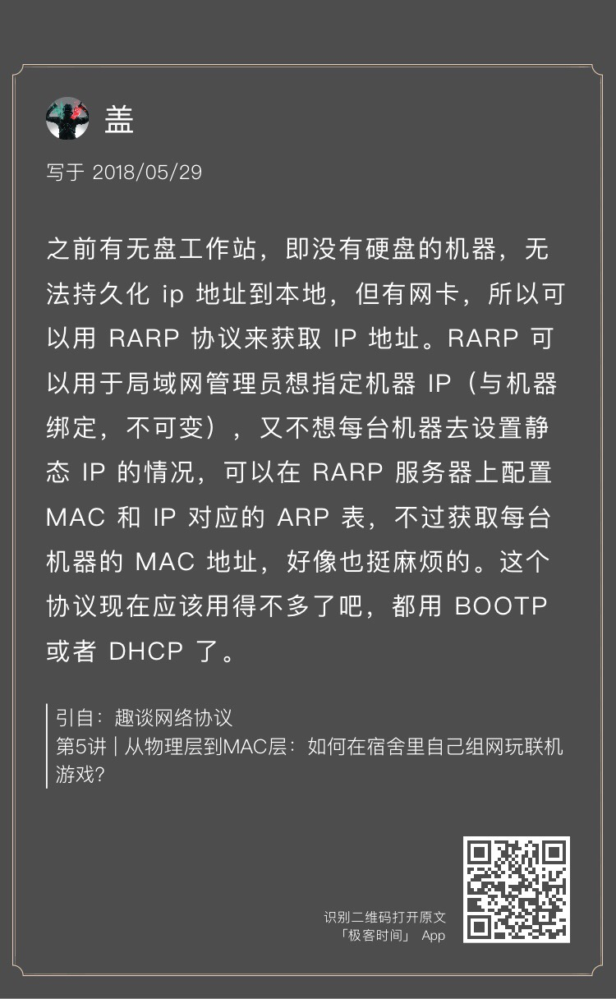
2.如果一个局域网里面有多个交换机，ARP 广播的模式会出现什么问题呢？
盖还说出了环路的问题。
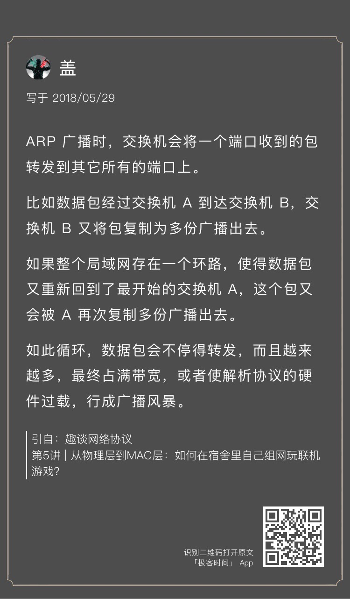
没心没肺不但说明了问题，而且说明了方案。
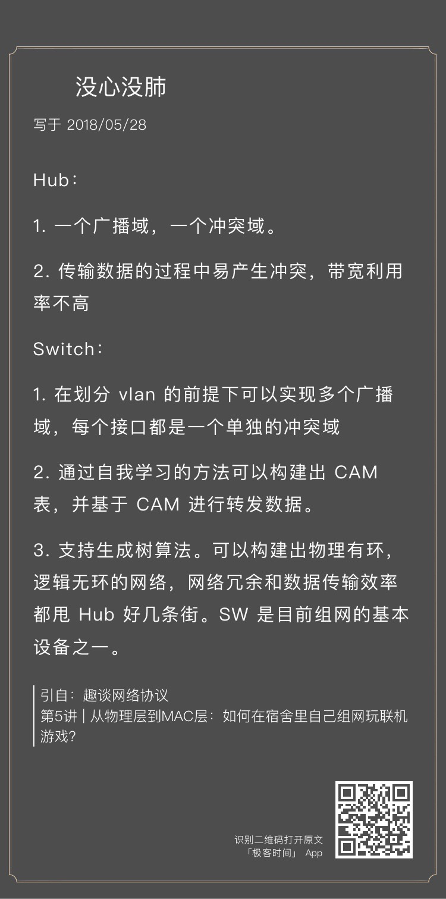
《第6讲 | 交换机与VLAN：办公室太复杂，我要回学校》
课后思考题
STP 协议能够很好地解决环路问题，但是也有它的缺点，你能举几个例子吗？
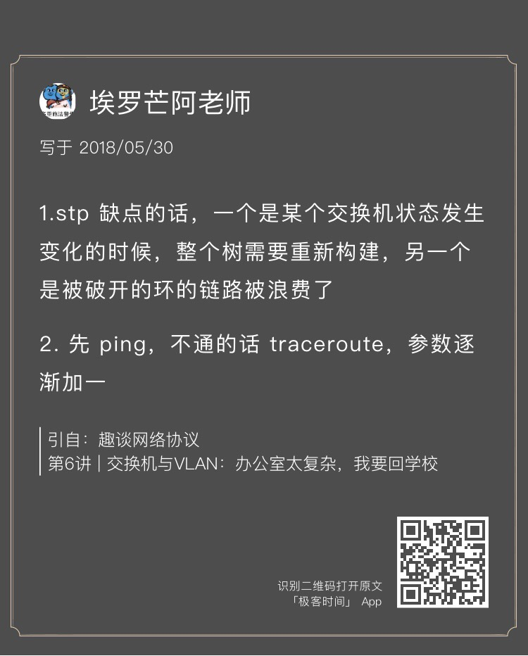
STP的主要问题在于，当拓扑发生变化，新的配置消息要经过一定的时延才能传播到整个网络。
由于整个交换网络只有一棵生成树，在网络规模比较大的时候会导致较长的收敛时间，拓扑改变的影响面也较大，当链路被阻塞后将不承载任何流量，造成了极大带宽浪费。
留言问题
1.每台交换机的武力值是什么样的？
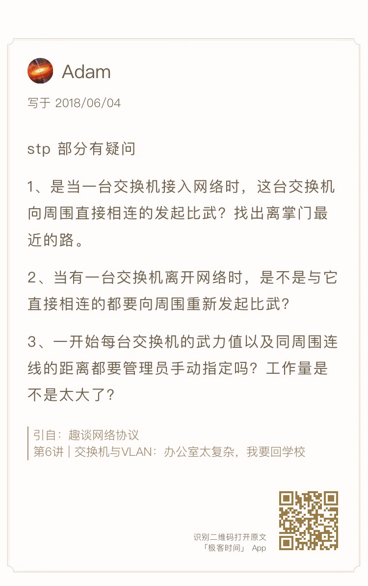
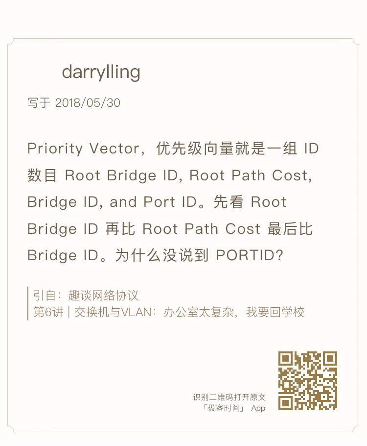
当一台交换机加入或者离开网络的时候，都会造成网络拓扑变化，这个时候检测到拓扑变化的网桥会通知根网桥，根网桥会通知所有的网桥拓扑发生变化。
网桥的ID是由网桥优先级和网桥MAC地址组成的，网桥ID最小的将成为网络中的根桥。默认配置下，网桥优先级都一样，默认优先级是32768。这个时候MAC地址最小的网桥成为根网桥。但是如果你想设置某台为根网桥，就配置更小的优先级即可。
在优先级向量里面，Root Bridge ID就是根网桥的ID，Bridge ID是网桥的ID，Port ID就是一个网桥上有多个端口，端口的ID。
按照RFC的定义，ROOT PATH COST是和出口带宽相关的，具体的数据如下：
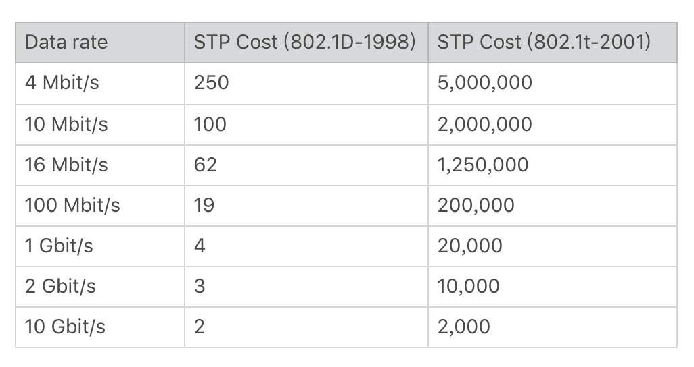
2.图中的LAN指的是什么？
在这一节中，这两张图引起了困惑。
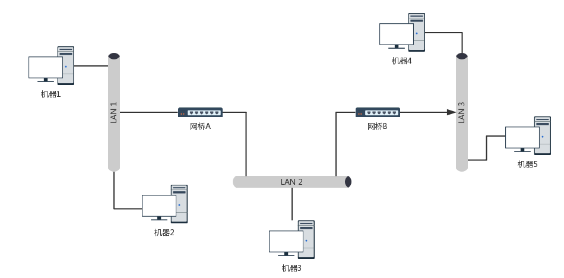
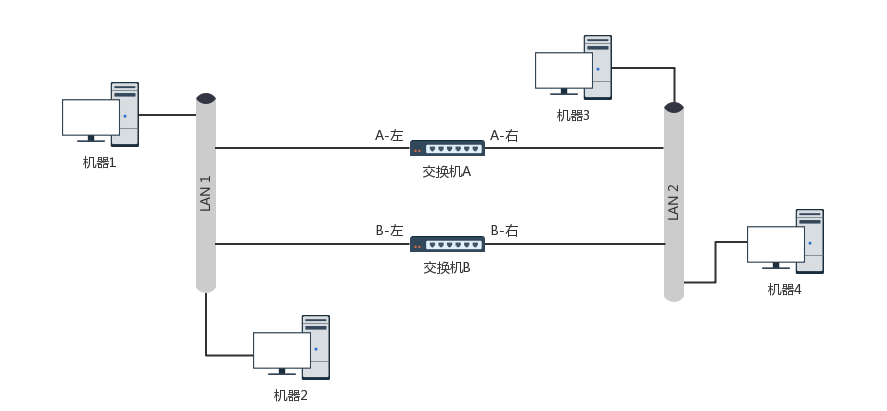
本来是为了讲二层的原理，做了个抽象的图，结果引起了大家的疑问，所以这里需要重新阐述一下。
首先，这里的LAN1、LAN2、LAN 3的说法的确不准确，因为通过网桥或者交换机连接，它们还是属于一个LAN，其实这是三个物理网络，通过网桥或者交换机连接起来，形成一个二层的LAN。
对于一层，也即物理层的设备，主要使用集线器（Hub），这里我们就用Hub将物理层连接起来。
于是我新画了两个图。
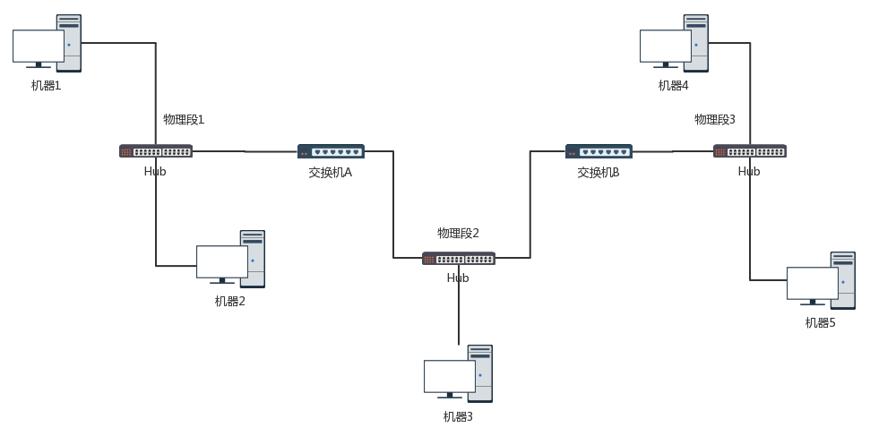
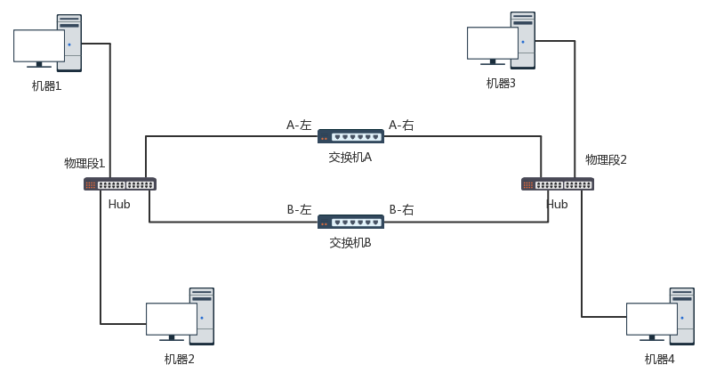
在这里，我用Hub将不同的机器连接在一起，形成一个物理段，而非LAN。
3.在MAC地址已经学习的情况下，ARP会广播到没有IP的物理段吗？
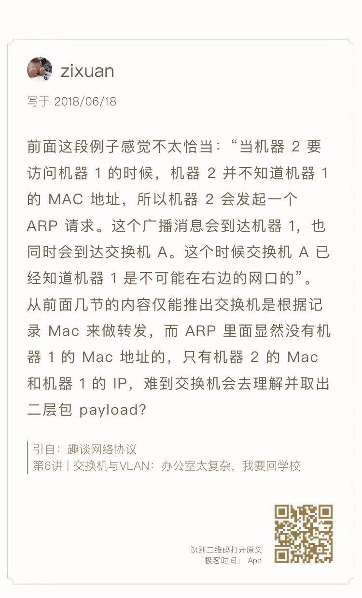
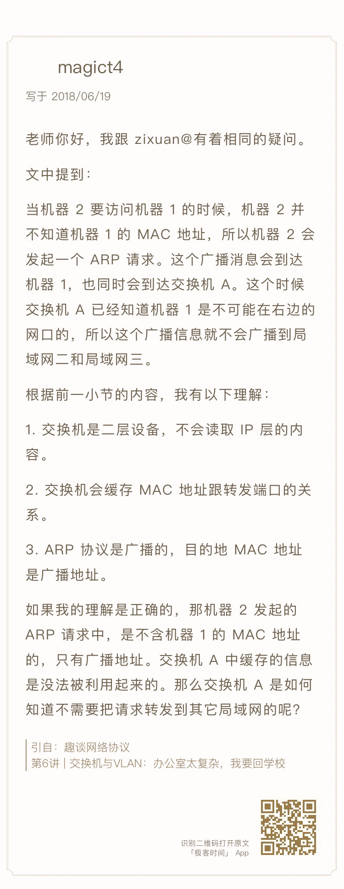
首先谢谢这两位同学指出错误，这里ARP的目标地址是广播的，所以无论是否进行地址学习，都会广播，而对于某个MAC的访问，在没有地址学习的时候，是转发到所有的端口的，学习之后，只会转发到有这个MAC的端口。
4.802.1Q VLAN 和Port-based VLAN有什么区别？
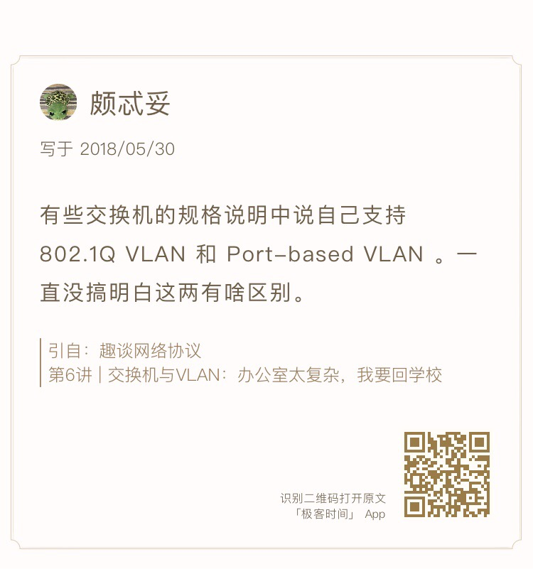
所谓Port-based VLAN，一般只在一台交换机上起作用，比如一台交换机，10个口，1、3、5、7、9属于VLAN 10。1发出的包，只有3、5、7、9能够收到，但是从这些口转发出去的包头中，并不带VLAN ID。
而802.1Q的VLAN，出了交换机也起作用，也就是说，一旦打上某个VLAN，则出去的包都带这个VLAN，也需要链路上的交换机能够识别这个VLAN，进行转发。
感谢第3讲至第6讲中对内容有深度思考和提出问题的同学。我会为你们送上奖励礼券和知识图谱。（稍后运营同学会发送短信通知。）
欢迎你继续提问！
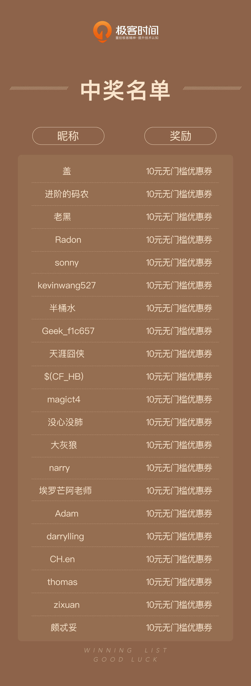
© 2019 - 2023 Liangliang Lee. Powered by gin and hexo-theme-book.